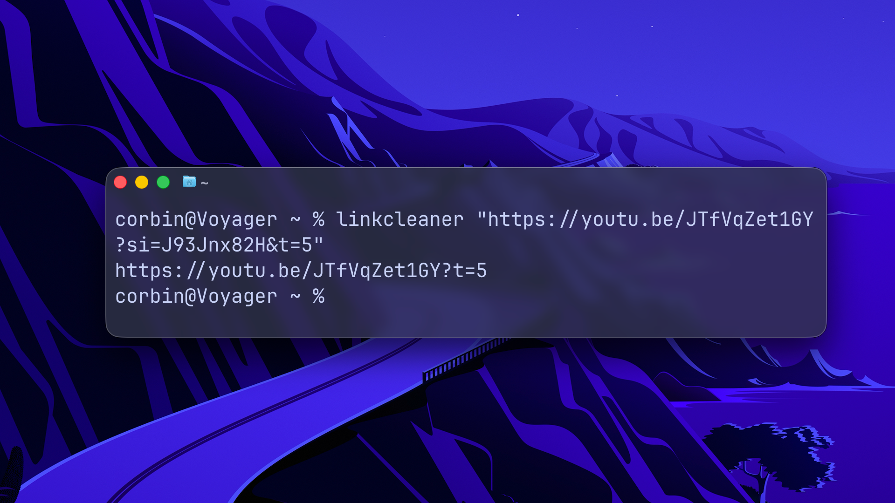
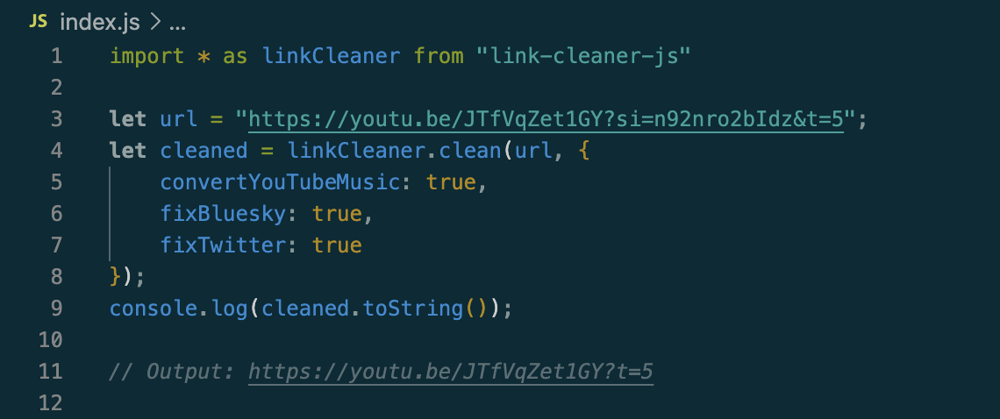
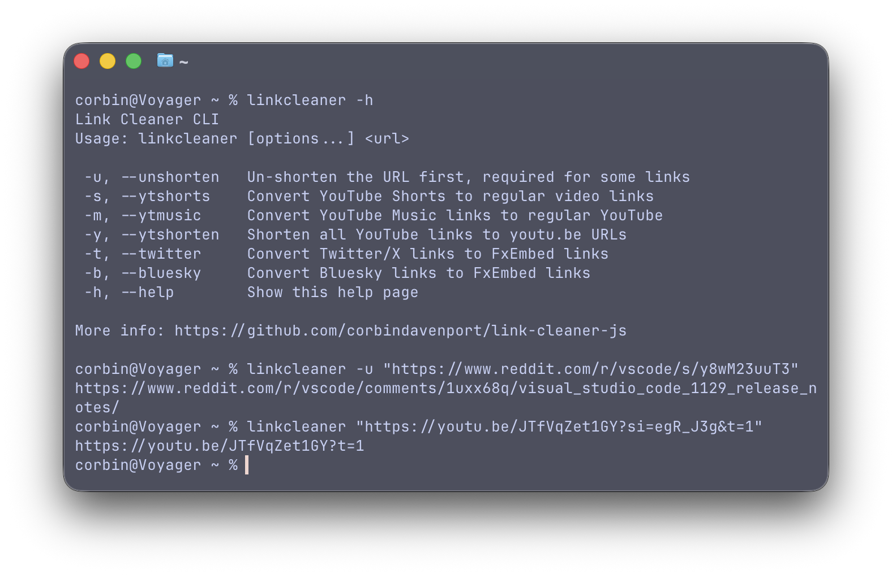
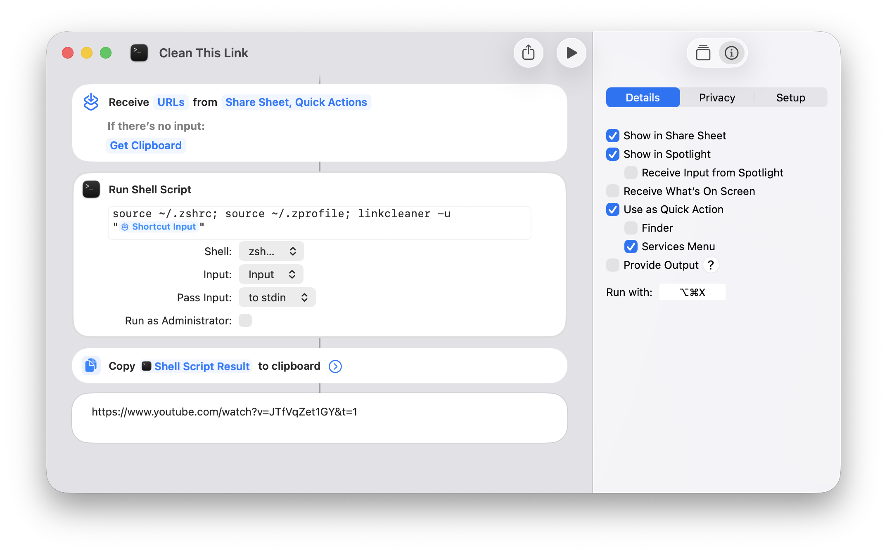

I released the Link Cleaner web app in 2021 as a way to quickly remove tracking data and other unnecessary parameters from URLs, primarily on mobile devices where text strings are difficult to edit. The web app now has over 25K monthly active users, with a recent spike that is partially due to YouTube doxing people through its tracking links.
There have been some requests for versions of Link Cleaner that don’t require opening a web app, like a browser extension or command-line application. Some functions also aren’t feasible inside a web browser (at least with fully-local processing), but would be possible in other environments.
For these use cases, I’m excited to announce two projects based on Link Cleaner. The first is Link Cleaner JS, a JavaScript library for cleaning and un-shortening URLs. The second is Link Cleaner CLI, a command-line tool for Windows, Mac, and Linux based on the new library.
Link Cleaner JS is a tiny JavaScript library for cleaning URLs, ready for use in any web app, browser extension, or Node.js application. It’s a slightly-improved version of the URL processing from the Link Cleaner web app, which will now use the library.
The URL processing starts by removing all parameters (the parts after the ? character) from the input URL. It then restores any parameters known to be required for the given website, like the “id” parameter in YouTube video links. For some types of links, like products from Amazon or Walmart, it constructs an entirely new URL.

You can also use the same options found in the Link Cleaner app, like shortening YouTube links, converting Bluesky and Twitter/X links to their FxEmbed equivalents, and more.
The library also has an asynchronous clean function, which first makes a request to the input URL to retrieve the destination page, then cleans that. This makes it possible to clean shortened URLs (like bit.ly or TinyURL links), post links shared from the Reddit mobile app, and other links that completely obscure the destination. CORS prevents this from working in a web browser, but it does work in Node.js and other environments.
Link Cleaner CLI is a command-line application that uses the JavaScript library in a Node.js runtime, allowing you to clean and un-shorten links on any Windows, macOS, or Linux system. It can be used in a terminal, or easily integrated into Bash scripts and other automations.

You just run “linkcleaner” in a terminal or script, followed by the URL you want to clean, and it outputs the cleaned version. The un-shorten mode is available by adding the “-u” or “–unshorten” flags, and all the options from the library/web app are available as more flags. You can also use piping.
Here’s how you can use it to un-shorten and clean a URL in your clipboard on a Wayland-based Linux distribution, using wl-clipboard, and then copy the result back to the clipboard:
wl-paste | linkcleaner -u | wl-copy
Here’s the same example on a macOS system:
pbpaste | linkcleaner -u | pbcopy
As a more advanced example, I made a Shortcut on my Mac that starts the CLI app, using input from the Services Menu or my clipboard, and then copies the result to the clipboard. That allows me to clean and un-shorten a link anywhere on my computer just by selecting and right-clicking it, or by pressing a keyboard shortcut with the URL in my clipboard.

I’m sure similar workflows can be made on Windows (maybe with PowerToys?) and Linux, as well as other use cases I haven’t thought about. The possibilities are endless!
The Link Cleaner JS library and CLI application are in the same GitHub repository and NPM package. The Readme includes instructions for installing and using them.
With these new options for using Link Cleaner, it’s even easier to share clean and privacy-preserving links in your messages, social media posts, articles, and other communications. The JS library provides a shared infrastructure for my own projects—which will hopefully include a Link Cleaner browser extension in the future—while also allowing other software projects to add link cleaning as a feature.
You can also just keep using the Link Cleaner web app.